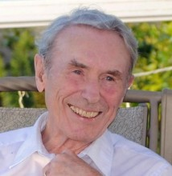

Please note: the AAS Obituaries are temporarily being hosted on this website while their full content is being ingested into the PubPub publishing platform newly adopted by the Bulletin of the American Astronomical Society. When the migration is complete, your existing links will take you to the final, migrated content. Contact peter.williams@aas.org with any questions.
Albert Paul Linnell (1922-2017)
The scientific community lost Dr. Albert Paul Linnell on 20 January 2017 after a long and successful astronomical career that spanned 68 of his 94 years. Born in Canby, Minnesota, on 30 June 1922, Albert's family moved to Michigan two years later, and he spent his childhood first in Boyne City and then in Petoskey, the city known for its fossil stones of which Al kept his personal supply. After graduation from Petoskey High School in 1940, he went on to graduate Phi Beta Kappa from the College of Wooster in Ohio in 1944 with bachelor’s degrees in Physics, Chemistry, and Math. Following enlistment in the US Army during World War II, he served as a Lieutenant in the Signal Corps for 3 years in the Philippines.
After the war, Al resumed his education, attending graduate school at Harvard University and completing his PhD in Astronomy in 1950 with his thesis titled "Astronomical Photoelectric Photometry." Applying photometry to close binary star systems, Al began what would be a lifetime of achievements in astronomy. His first paper, on the cataclysmic variable UX Ursae Majoris, was published in Sky and Telescope in 1949. Almost 60 years later, in 2008, he was still working on understanding this system, publishing a paper with several co-authors in the Astrophysical Journal titled "Modeling UX Ursae Majoris: An Abundance of Challenges." Two of the paper’s co-authors, Ivan Hubeny and Paula Szkody, were privileged to work with Albert on modeling cataclysmic variables for the last 20-30 years.
One of Al's major achievements was the publicly available program that he developed called BINSYN, which is used to simulate the spectra and light curves of binary systems. Al published his final version in the Publications of the Astronomical Society of the Pacific in 2012. Beginning in 1993, Ivan Hubeny would spend a week or two each year working with Al to update BINSYN. Ivan writes:
"Our first project was to upgrade BINSYN from providing synthetic colors of a binary system, to computing a detailed synthetic spectrum by attaching specific model atmospheres and appropriate synthetic spectra to individual positions of the stellar surfaces. Mutual occultations, as well as non-spherical shapes of the stars were taken into account. Later, the program was further upgraded by including an accretion disk. We first applied this program to study the popular binary system Beta Lyrae, but the main subsequent collaborations were on cataclysmic variable systems. Computing one global synthetic spectrum of a cataclysmic variable system entails computing several model atmospheres and synthetic spectra for the central white dwarf, and about 50 models of the vertical structure of the individual disk rings, i.e., a lot of work. Al did these calculations tirelessly, and with unquenchable enthusiasm."
Paula Szkody often provided optical and ultraviolet observational data that Al and Ivan could model with BINSYN. Al would arrive at the University of Washington each week with hundreds of models revealing his latest work. In addition to his research work, Al was very involved in his teaching and administrative posts. As Professor of Astronomy at Amherst College from 1949 to 1966, he organized Amherst, Smith, Mount Holyoke, and the University of Massachusetts to create a four-college astronomy department which he then chaired. He served on the Goldberg panel in 1953 that proposed a national observatory at Kitt Peak and also on a panel in 1960 that selected the site for Cerro Tololo Inter-American Observatory in Chile.
In 1966, Al moved back to Michigan to start the Astronomy/Astrophysics Department at Michigan State University (MSU) in East Lansing and become its Chair. He introduced an undergraduate major in 1967 and oversaw the building of a campus observatory with a 24-inch Boller and Chivens reflector telescope that was dedicated in 1971. In the five years since its founding, the department grew to 50 undergraduate astrophysics majors; his later colleague, Paula Szkody, was one of the first graduating astrophysics majors in 1970. After his 25-year tenure at MSU, Albert retired and moved to Seattle in 1991 where he became a Visiting Scholar at the University of Washington (UW) and a Fellow of the AAAS.
In the summer of 2012, several colleagues and family gathered at UW for a scientific meeting to celebrate Al's 90th birthday. Throughout his scientific career, Al was known for his personable, upbeat attitude facing, not only astronomical challenges, but also personal ones with aging health situations. Nothing was able to erase the constant smile and intense interest in his work. He was also able to combine a happy family life with his research and administrative work. He married his college sweetheart, Jane Elliott, in 1944 and they had five children. After Jane died in 1991, Al married a fellow professor at MSU, Ann Schnatterly Kremer, who also had five children. Al and Ann had offices in a home that had an expansive view of Lake Washington and Mt. Rainier, until they moved downtown in 2009 to be closer to health services. Al continued his research there and maintained an active interest in astronomy as well as good times with his extended family. Their memories include slide shows by Al of what life was like during his earlier years. He will be missed by his scientific colleagues as well as his 10 children and 20 grandchildren. His longtime colleague, Ivan Hubeny, expressed the sentiments of many: "I have always deeply admired his dedication to work, and his inexhaustible enthusiasm to engage in research. He has become a sort of role model to me about how to continue in valuable scientific work well past retirement. He will be sorely missed by many of us, but he will always be remembered in our hearts."
Obituary written by: Paula Szkody (University of Washington, Seattle)
Additional links:
BAAS Citation: BAAS, 2017, 49, 011